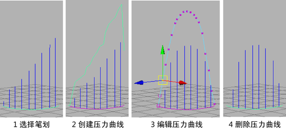

如果您在创建笔划时使用带压力映射的手写笔，“Paint Effects”将压力值指定给基础笔划路径曲线上的 UV 点。这些值将与笔划一起存储。可以在属性编辑器中分别调整每个值（请参见修改现有笔划的笔划设置的修改现有笔划的压力映射部分），但是这不能证明笔划通常具有 100 个以上的压力值。
或者，也能以交互方式使用笔划压力曲线修改压力值。可以对任何笔划执行此操作，无论该笔划是通过简单的鼠标还是压力敏感的光笔而创建均是如此。笔划压力曲线是压力值沿笔划的可视表示方式。通过将压力曲线的控制点移向或远离笔划，可以更改笔划上的压力值。
在下面的示例中，“管长度”(Tube Length)映射到笔划的压力。编辑了笔划的压力曲线以生成新的压力值，进而生成新的管长度。

以交互方式修改压力值
- 在场景视图中选择笔划。
- 按照如下步骤创建压力曲线：
- 选择“生成 > 曲线工具 > 生成压力曲线”(Generate > Curve Utilities > Make Pressure Curve) >
 。将显示“生成压力曲线选项”(Make Pressure Curve Options)窗口。
。将显示“生成压力曲线选项”(Make Pressure Curve Options)窗口。
- 设置需要沿压力曲线的控制点数量。控制点越多，压力点之间的过渡就越平滑。这些点之间的压力点是线性插入的。
- 设置应将压力曲线从笔划偏移多远。此设置不会影响压力值，它仅控制压力曲线的位置，因此您可以根据场景设置比例。
- 单击“创建”(Create)。“Paint Effects”在笔划顶端创建压力曲线，然后基于偏移比例乘以的压力值在曲线的法线方向偏移曲线。
创建曲线时还会创建表达式。
- 选择“生成 > 曲线工具 > 生成压力曲线”(Generate > Curve Utilities > Make Pressure Curve) >
- 按照如下步骤编辑压力曲线：
- 选择笔划，单击鼠标右键以打开标记菜单，然后选择“控制顶点”(Control Vertex)以进入 CV 选择模式。
- 选择压力曲线上的 CV 并将它们转换为新的压力值。压力曲线与 3D 笔划的距离会影响压力值。
- 如果对新的压力值感到满意，则可以删除压力曲线。现在不再需要。